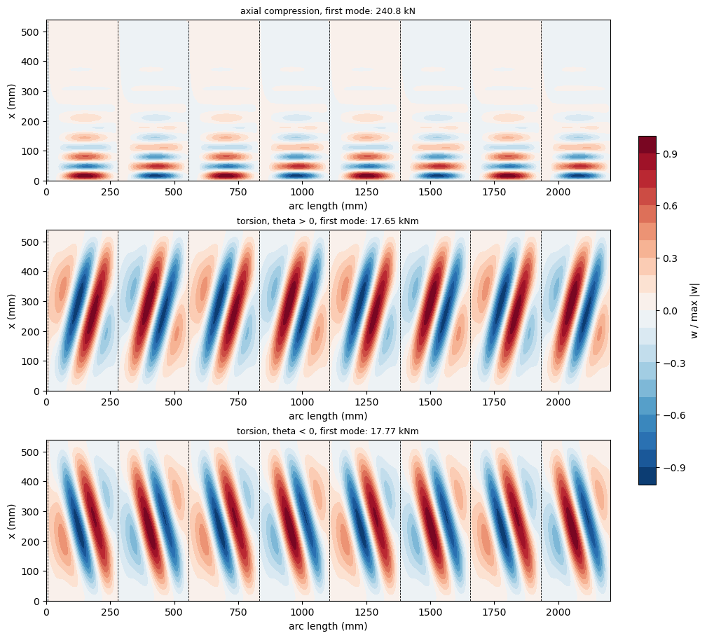

Axial and torsional buckling of a CFRP cylinder with L-shaped stringers (Lanzi, Bisagni and Cordisco 2003)#
Lanzi, Bisagni and Cordisco [1] designed, within the POSICOSS project, a woven carbon-fibre cylinder stiffened by eight L-shaped stringers to work in the post-buckling range under torsion. Their configuration A has no ring; configuration B adds an external ring at half height, and only B was tested. For configuration A their finite element analyses give the first buckling load under axial compression, 213 kN, and the first buckling torque, 13.5 kNm, of the perfect shell. The same family of shells is described in [2-4].
This notebook builds configuration A with panels.multidomain.MultiDomain, every part being a panels.shell.Shell domain: curved skin strips, the foot of each stringer as a cylindrical shell bonded to the skin and its blade as a flat plate, connected along their edges and over the bonded areas. It computes both first buckling loads with linear buckling analyses, shows their convergence and mode shapes, and compares them with the published values.
References
Lanzi, L., Bisagni, C., and Cordisco, P., “Post-buckling design and testing of composite stiffened cylindrical shells under torsion”, 29th European Rotorcraft Forum, Friedrichshafen, 16-18 September 2003, paper 75. http://hdl.handle.net/20.500.11881/394
Bisagni, C., Cordisco, P., and Lanzi, L., “Experimental buckling tests and numerical analyses of stiffened cylindrical shells in composite materials”, ICAS 2002 Congress, Toronto, paper 491.
Bisagni, C., and Cordisco, P., “Testing of stiffened composite cylindrical shells in the postbuckling range until failure”, AIAA Journal, 42(9), 1806-1817, 2004. https://doi.org/10.2514/1.6088
Bisagni, C., and Cordisco, P., “Post-buckling and collapse experiments of stiffened composite cylindrical shells subjected to axial loading and torque”, Composite Structures, 73(2), 138-149,
Castro, S. G. P., and Donadon, M. V., “Assembly of semi-analytical models to address linear buckling and vibration of stiffened composite panels with debonding defect”, Composite Structures, 160, 232-247, 2017. https://doi.org/10.1016/j.compstruct.2016.10.026
The analyses take about 110 minutes on one core; the notebook is stored with the outputs of its last execution.
[1]:
import time
import numpy as np
import matplotlib.pyplot as plt
import composites
import panels
import posicoss_utils as pu
from posicoss_utils import print_table, rel
%matplotlib inline
print('panels', panels.__version__,
'| composites', composites.__version__)
T_START = time.time()
panels 0.15.0 | composites 0.10.3
1. Data of the shell#
All values are those of [1] unless another source is named; the page numbers are those of the paper (“75-2” is its second page).
quantity |
value |
source |
|---|---|---|
lamina, woven CFRP |
\(E_{11}\) = 57765 N/mm², \(E_{22}\) = 53686 N/mm², \(G_{12}\) = 3065 N/mm², \(\nu_{12}\) = 0.048 |
[1] Table 1, p. 75-2 (also [3] and [4], Table 1) |
ply thickness |
0.330 mm |
[1] Table 1 |
internal diameter, free length |
700 mm, 540 mm |
[1] p. 75-2; [3] p. 1807: internal radius 350 mm, actual length 540 mm |
skin |
three layers [45/0/-45], 0° along the axis |
[1] p. 75-2; [3] Fig. 1d |
reinforced strips |
40 mm wide, on the external surface under each stringer, three added layers [-45/0/45] |
[3] Fig. 1d; [1] p. 75-2 prints [45/-45/45] |
stringers |
8, L-shaped, bonded and riveted on the inner surface, equally spaced and equally oriented; blade 25 mm, foot (“part in contact with the skin”) 32 mm, corner radius about 7 mm |
[1] p. 75-2 and 75-3 |
stringer lay-up |
eight plies [0/90]\(_{2S}\) |
[3] p. 1808 and [4] Table 2; [1] p. 75-3 prints “eight [0°/90°]\(_{4S}\) oriented layers” |
configuration A |
no central ring |
[1] p. 75-2, Figure 1.A |
Remarks on the data:
The stringer lay-up of [1] is ambiguous ([0/90]\(_{4S}\) would be 16 plies); [3] and [4] give eight plies, [0/90]\(_{2S}\), and the nominal thickness of skin, reinforcement and stringer of the torsion shell in [4], Table 3, 4.62 mm = (3 + 3 + 8) × 0.33 mm, confirms eight plies.
The lay-up of the reinforcement differs between the sources: [45/-45/45] in [1], [-45/0/45] in [3] (Fig. 1d) and [45/-45/0/45/-45] for the whole reinforced area of all three shells in [4], Table 2, whose skin of the torsion shell, [45/-45], also contradicts its nominal thickness, 0.99 mm (Table 3). The balanced [-45/0/45] of [3] is used, and the [45/-45/45] of [1] is a sensitivity case (Section 7).
Not given: the order of the plies through the thickness (here listed from the inner face, the side of the mandrel on which the shells were laid up [4]), the position of the foot within the 40 mm reinforced strip (here centred) and the datum of the 25 mm and 32 mm dimensions of the L (here the outer dimensions of the section). \(G_{13}\) and \(G_{23}\) are not given either; they do not enter the classical laminated plate theory used here.
The reference values are those of the finite element analyses of [1] for configuration A:
quantity |
value |
source |
|---|---|---|
first buckling load, axial compression |
213 kN |
[1] Table 2 |
pre-buckling axial stiffness |
215 kN/mm |
[1] Table 2 |
first buckling torque |
13.5 kNm |
[1] Table 3 (free axial shortening) and Table 4 (constrained) |
pre-buckling torsional stiffness |
15.8 kNm/degree as printed, probably 158 (Section 8) |
[1] Tables 3 and 4 |
The tests were made on configuration B only (with the ring); their values are quoted in Section 8 for context, not as references of configuration A.
[2]:
# lamina, [1] Table 1; G13 and G23 (not given) do not enter the CLPT
E11, E22, G12, NU12 = 57765., 53686., 3065., 0.048 # N/mm^2
PLYT = 0.330 # mm
LAMINAPROP = (E11, E22, NU12, G12, G12, G12)
D_INNER = 700. # mm, [1] p. 75-2
L_FREE = 540. # mm, [1] p. 75-2
N_STRINGERS = 8 # [1] p. 75-3
SKIN = [45, 0, -45] # [1] p. 75-2, from the inner face (assumed)
REINF = [-45, 0, 45] # [3] Fig. 1d, added on the outer face
REINF_WIDTH = 40. # mm, [1] p. 75-2
STRINGER = [0, 90, 0, 90, 90, 0, 90, 0] # [0/90]_2S, [3] p. 1808, [4] Table 2
BLADE_OUT, FOOT_OUT = 25., 32. # mm, [1] p. 75-2
REF = {'P_axial': 213., 'K_axial': 215., 'T_torsion': 13.5, 'K_torsion': 15.8}
# derived geometry, mm
T_SKIN = len(SKIN)*PLYT
T_STR = len(STRINGER)*PLYT
R = D_INNER/2 + T_SKIN/2 # radius of the skin mid-surface
BLADE_W = BLADE_OUT - T_STR/2 # blade domain: foot mid-surface to tip
FOOT_W = FOOT_OUT - T_STR/2 # foot domain: blade mid-plane to free edge
REINF_LEFT = (REINF_WIDTH - FOOT_OUT)/2 + T_STR/2 # strip before the blade
pitch = 2*np.pi*R/N_STRINGERS
print('skin %.2f mm, stringer %.2f mm thick; R = %.3f mm; pitch %.2f mm (arc)'
% (T_SKIN, T_STR, R, pitch))
print('blade domain %.2f mm, foot domain %.2f mm; reinforced strip: %.2f + %.2f + %.2f mm'
% (BLADE_W, FOOT_W, REINF_LEFT, FOOT_W, REINF_WIDTH - REINF_LEFT - FOOT_W))
print('bay of bare skin %.2f mm' % (pitch - REINF_WIDTH))
skin 0.99 mm, stringer 2.64 mm thick; R = 350.495 mm; pitch 275.28 mm (arc)
blade domain 23.68 mm, foot domain 30.68 mm; reinforced strip: 5.32 + 30.68 + 4.00 mm
bay of bare skin 235.28 mm
2. The model#
The whole cylinder is modelled, since the eight bays need not buckle in phase. Each stringer pitch, starting at a blade, is split along the circumference into four curved skin domains (cylshell_clpt_sanders): the reinforced strip before the blade, the reinforced strip under the foot, the rest of the reinforced strip and the bay of bare skin. The reinforced strips have the laminate [45/0/-45/45/-45/45] with an offset that keeps the three skin plies where they are in the bay, so that the
reference surface of all skin domains is the mid-surface of the skin. Consecutive skin domains are joined with the connection 'SSycte' (continuous \(u\), \(v\), \(w\) and slope), the last to the first closing the cylinder.
Each L-shaped stringer is assembled from a cylindrical shell and a plate, as the section is:
the foot, a cylindrical-shell domain (
cylshell_clpt_sanders) of the width of the foot, with the stringer laminate, bonded to the inner face of the skin domain under it with'SB', which makes the displacements of the two faces in contact equal over the whole area [5];the blade, a flat plate standing on the edge of the foot and pointing inwards, connected with
'BFycte', which makes the displacements and the rotation about the common edge continuous, the local axes of the blade being those of the foot rotated by 90 degrees. The blade is loaded in its own plane, and its bending in that plane, the bending of the stringer normal to the skin, is destabilised by the axial force through the term \(N_{xx} v_{,x}^2\) of the Green-Lagrange strains, which the von Kármán strains do not have: the blade is aplate_clpt_glplate.
The blade root is tied to the mid-surface of the foot, so the widths of the domains are measured from the mid-planes of the section (printed above); the corner radius of about 7 mm is not modelled. The bfsccylinder implementation of this case makes the same modelling choice with finite elements: the foot is made of cylindrical-shell elements on the nodes of the skin, with an offset laminate, and the blade of flat plate elements, tied to the mid-surface of the skin; that variant is computed in
Section 7. All connections are imposed exactly with the null-space method of MultiDomain (conn_method='null-space').
Boundary conditions, those of the finite element model of [1] (p. 75-3): “all the translational degrees of freedom of the nodes of the lower edge” are fixed, \(u = v = w = 0\) at \(x = 0\) with the slope \(w_{,x}\) free, and the upper edge is tied to a rigid body. At \(x = L\) all domains have \(w = w_{,x} = 0\), and
axial compression: the uniform end-shortening \(u = -\delta\) of skin and blades, with \(v = 0\);
torsion: the rigid rotation \(\theta\) about the axis, \(v = \theta R\) on the skin and the corresponding displacement normal to the plane of each blade, with \(u = 0\). [1] computes the torsion with the axial shortening free (Table 3) and constrained (Table 4) and obtains the same first buckling torque, 13.5 kNm; the constrained case is the one modelled here (a uniform but free \(u\) of the end is not a boundary condition of the model).
The feet follow the skin at both ends through 'SB'. The prescribed displacements are also imposed exactly (pd_method='null-space'), as constraints with a right-hand side proportional to the load factor.
[3]:
def build(load, m, n_bay, n_reinf=4, n_foot=6, n_blade=6, **kwargs):
# with the foot referred to the skin mid-surface, the blade stands on it
blade_w = BLADE_W
if kwargs.get('foot_reference') == 'skin':
blade_w = BLADE_OUT + T_SKIN/2
args = dict(R=R, L=L_FREE, nstringers=N_STRINGERS, skin_stack=SKIN,
reinf_stack=REINF, reinf_width=REINF_WIDTH,
reinf_left=REINF_LEFT, foot_stack=STRINGER, foot_width=FOOT_W,
blade_stack=STRINGER, blade_width=blade_w, plyt=PLYT,
laminaprop=LAMINAPROP, m=m, n_bay=n_bay, n_reinf=n_reinf,
n_foot=n_foot, n_blade=n_blade, load=load,
blade_model='plate_clpt_gl')
args.update(kwargs)
return pu.l_cylinder(**args)
def solve(load, m, n_bay, num_eigvalues=4, **kwargs):
"""Linear buckling; critical load in kN (axial) or kNm (torsion) and the
pre-buckling stiffness in kN/mm or kNm/degree"""
md, parts = build(load, m, n_bay, **kwargs)
ev, evec, c1, P1, sec = pu.linear_buckling(md, num_eigvalues)
if load == 'axial':
# end-shortening of 1 mm at load factor 1: P1 is the axial force in N
stiff = P1/1e3
crit = ev[0]*P1/1e3
else:
theta = parts['theta']
torque = P1/theta # N mm, at load factor 1
stiff = torque/theta/1e6*np.pi/180. # kNm/degree
crit = ev[0]*torque/1e6
return dict(md=md, parts=parts, ev=ev, evec=evec, c1=c1, crit=crit,
stiff=stiff, size=md.get_size(), sec=sec)
md_, parts_ = build('torsion', 10, 12)
print('domains: %d skin, %d feet, %d blades; Ritz constants: %d'
% (len(parts_['skins']), len(parts_['feet']), len(parts_['blades']),
md_.get_size()))
domains: 32 skin, 8 feet, 8 blades; Ritz constants: 9120
3. Linear buckling about the linear pre-buckling state#
Each field of each domain is a Ritz series of products of Bardell’s hierarchical functions along \(x\) and \(y\) [5]. The connections and the supports are linear constraints on the Ritz constants \(\boldsymbol{c}\) of the assembly; with the end displacements prescribed as \(\lambda \bar{\boldsymbol{d}}\), every admissible configuration is \(\boldsymbol{c} = \boldsymbol{Z} \boldsymbol{c}_r + \lambda \boldsymbol{c}_{p}\), with \(\boldsymbol{Z}\) a basis of the null space of the constraints and \(\boldsymbol{c}_p\) a particular solution. The linear static solution for \(\lambda = 1\), \(\boldsymbol{c}_1\), is the pre-buckling state, and the critical load factors \(\lambda\) solve
with the reduced constitutive and geometric stiffness matrices, MultiDomain.linear_buckling. The load at \(\lambda = 1\) is the reaction work-conjugate to the prescribed displacements, \(P_1 = \boldsymbol{c}_p^\top \boldsymbol{r}(\boldsymbol{c}_1)\) (MultiDomain.reaction_pd): the axial force times \(\delta\) = 1 mm under compression, the torque times \(\theta\) under torsion. The first buckling load is \(\lambda_1\) times that load, and the pre-buckling stiffness is
the load at \(\lambda = 1\) divided by \(\delta\) or \(\theta\).
4. Convergence#
The numbers of terms along the axis, \(m\), and across the bay, \(n\), are increased together; the narrow reinforced strips (4 terms), the feet and the blades (6 terms) are checked with a last row of more terms. The quantity compared must change by less than 1 % between the last two meshes.
[4]:
MESHES = [(14, 16), (18, 20), (22, 24), (26, 26), (30, 28)]
conv = {}
for load in ('axial', 'torsion'):
rows = []
prev = None
for m, n in MESHES:
res = solve(load, m, n)
conv[(load, m, n)] = res
change = '' if prev is None else '%+.2f' % rel(res['crit'], prev)
rows.append([m, n, res['size'], '%.2f' % res['crit'], change,
'%.2f' % res['stiff'], '%.0f' % res['sec']])
prev = res['crit']
m, n = MESHES[-2]
res = solve(load, m, n, n_reinf=5, n_foot=8, n_blade=8)
rows.append(['%d (strips 5, feet and blades 8)' % m, n, res['size'],
'%.2f' % res['crit'], '%+.3f vs same m, n'
% rel(res['crit'], conv[(load, m, n)]['crit']),
'%.2f' % res['stiff'], '%.0f' % res['sec']])
unit = 'kN' if load == 'axial' else 'kNm'
print('\n%s' % load)
print_table(rows, ['m', 'n (bay)', 'Ritz constants', 'first buckling (%s)' % unit,
'change %', 'stiffness (%s/%s)' % (unit, 'mm' if load == 'axial'
else 'degree'), 's'])
axial
m n (bay) Ritz constants first buckling (kN) change % stiffness (kN/mm) s
-------------------------------- ------- -------------- ------------------- ------------------- ----------------- ---
14 16 14112 314.96 270.92 28
18 20 19872 256.88 -18.44 270.83 46
22 24 26400 244.47 -4.83 270.81 112
26 26 32448 241.42 -1.25 270.80 291
30 28 38880 240.80 -0.26 270.80 930
26 (strips 5, feet and blades 8) 26 37440 241.40 -0.006 vs same m, n 270.80 401
WARNING: Null-space method: the rank of the constraints is not well defined, the smallest independent pivot is 7.4e-07 and the largest redundant one 1.5e-10, see the parameter "tol"
WARNING: Null-space method: the rank of the constraints is not well defined, the smallest independent pivot is 7.4e-07 and the largest redundant one 1.5e-10, see the parameter "tol"
torsion
m n (bay) Ritz constants first buckling (kNm) change % stiffness (kNm/degree) s
-------------------------------- ------- -------------- -------------------- ------------------- ---------------------- ---
14 16 14112 17.65 178.65 17
18 20 19872 17.65 -0.01 178.59 43
22 24 26400 17.65 -0.00 178.57 94
26 26 32448 17.65 -0.00 178.56 177
30 28 38880 17.65 -0.00 178.56 358
26 (strips 5, feet and blades 8) 26 37440 17.65 -0.000 vs same m, n 178.56 206
5. Results and comparison with the reference values#
The finest mesh of Section 4 gives the values below. Under torsion the sense of the torque matters for an anisotropic shell; [1] does not state it, nor the sense of the ±45° plies, so the first buckling torque is computed in both senses (the second with \(\theta < 0\)).
[5]:
M_FIN, N_FIN = MESHES[-1]
ax = conv[('axial', M_FIN, N_FIN)]
to = conv[('torsion', M_FIN, N_FIN)]
to_neg = solve('torsion', M_FIN, N_FIN, theta=-1.e-3)
rows = [['first buckling load, axial (kN)', '%.1f' % ax['crit'], REF['P_axial'],
'%+.1f' % rel(ax['crit'], REF['P_axial'])],
['pre-buckling axial stiffness (kN/mm)', '%.1f' % ax['stiff'], REF['K_axial'],
'%+.1f' % rel(ax['stiff'], REF['K_axial'])],
['first buckling torque, theta > 0 (kNm)', '%.2f' % to['crit'], REF['T_torsion'],
'%+.1f' % rel(to['crit'], REF['T_torsion'])],
['first buckling torque, theta < 0 (kNm)', '%.2f' % abs(to_neg['crit']),
REF['T_torsion'], '%+.1f' % rel(abs(to_neg['crit']), REF['T_torsion'])],
['pre-buckling torsional stiffness (kNm/degree)', '%.1f' % to['stiff'],
REF['K_torsion'], '%+.1f' % rel(to['stiff'], REF['K_torsion'])]]
print('configuration A, m = %d, n = %d' % (M_FIN, N_FIN))
print_table(rows, ['quantity', 'panels', 'Lanzi et al. (2003)', 'difference %'])
WARNING: Null-space method: the rank of the constraints is not well defined, the smallest independent pivot is 7.4e-07 and the largest redundant one 1.5e-10, see the parameter "tol"
WARNING: Null-space method: the rank of the constraints is not well defined, the smallest independent pivot is 7.4e-07 and the largest redundant one 1.5e-10, see the parameter "tol"
configuration A, m = 30, n = 28
quantity panels Lanzi et al. (2003) difference %
--------------------------------------------- ------ ------------------- ------------
first buckling load, axial (kN) 240.8 213.0 +13.1
pre-buckling axial stiffness (kN/mm) 270.8 215.0 +26.0
first buckling torque, theta > 0 (kNm) 17.65 13.5 +30.7
first buckling torque, theta < 0 (kNm) 17.77 13.5 +31.7
pre-buckling torsional stiffness (kNm/degree) 178.6 15.8 +1030.1
The pre-buckling stiffnesses can be checked against the membrane stiffnesses of the cross-section. Under axial compression a bar estimate, with the lateral (hoop) expansion of every domain free, is \(K = \sum_i (A_{11} - A_{12}^2/A_{22})_i \, b_i / L\) over all domains (skin, feet and blades); the reduction of \(A_{11}\) by the Poisson effect is large for the ±45° plies. Under torsion the thin-walled closed section gives \(K = R^2 \sum_i A_{66,i} b_i / L\) over the skin domains, the open stringers adding little.
[6]:
mdx, px = build('axial', 4, 4)
EA = sum((p.ABD[0, 0] - p.ABD[0, 1]**2/p.ABD[1, 1])*p.b
for p in px['skins'] + px['feet'] + px['blades'])
GJ = R**2*sum(p.ABD[2, 2]*p.b for p in px['skins'])
rows = [['axial (kN/mm)', '%.1f' % (EA/L_FREE/1e3), '%.1f' % ax['stiff']],
['torsion (kNm/degree)', '%.1f' % (GJ/L_FREE/1e6*np.pi/180), '%.1f' % to['stiff']]]
print_table(rows, ['pre-buckling stiffness', 'membrane estimate', 'panels'])
pre-buckling stiffness membrane estimate panels
---------------------- ----------------- ------
axial (kN/mm) 268.0 270.8
torsion (kNm/degree) 186.2 178.6
6. Mode shapes#
The radial displacement \(w\) of the first mode on the unrolled skin (positive outwards); the dashed lines are the blades. Under axial compression the first eigenvalues are close together, the bays buckling with almost the same load in different combinations; under torsion each bay buckles in inclined waves.
[7]:
def plot_mode(ax_, res, title):
X, S, W = pu.skin_field(res['parts']['skins'], res['evec'][:, 0], gridx=80)
W = W/np.abs(W).max()
cs = ax_.contourf(S, X, W, levels=np.linspace(-1, 1, 21), cmap='RdBu_r')
for k in range(N_STRINGERS):
ax_.axvline(k*pitch + REINF_LEFT, color='k', lw=0.6, ls='--')
ax_.set_xlabel('arc length (mm)')
ax_.set_ylabel('x (mm)')
ax_.set_title(title, fontsize=9)
return cs
fig, axes = plt.subplots(3, 1, figsize=(10, 9), constrained_layout=True)
plot_mode(axes[0], ax, 'axial compression, first mode: %.1f kN' % ax['crit'])
plot_mode(axes[1], to, 'torsion, theta > 0, first mode: %.2f kNm' % to['crit'])
cs = plot_mode(axes[2], to_neg, 'torsion, theta < 0, first mode: %.2f kNm'
% abs(to_neg['crit']))
fig.colorbar(cs, ax=axes, shrink=0.6, label='w / max |w|')
plt.show()
print('first eigenvalues, axial:', np.round(ax['ev'], 4))
print('first eigenvalues, torsion theta > 0:', np.round(to['ev'], 4))

first eigenvalues, axial: [0.8892 0.8892 0.8892 0.8893]
first eigenvalues, torsion theta > 0: [1.7252 1.7341 1.7341 1.7563]
7. Sensitivity to the data that are not given#
Each case changes one assumption of Section 1 or 2, with the mesh \(m = 26\), \(n = 26\) of Section 4:
the lower end clamped (\(w_{,x} = 0\)), as the specimens clamped in the platforms of the test rig;
the reinforcement [45/-45/45] of [1] instead of [-45/0/45] of [3];
the skin plies listed from the outer face, i.e. [-45/0/45] from the inner face;
the blade on the other edge of the foot (the L mirrored);
the foot with the mid-surface of the skin as reference surface (offset laminate) and the blade standing on it, as in the bfsccylinder implementation of this case: the blade domain is then 25.5 mm wide and overlaps the skin and the foot;
the blades as
plate_clpt_donnellplates, with the von Kármán strains, instead ofplate_clpt_gl.
[8]:
M_S, N_S = 26, 26
base = {load: conv[(load, M_S, N_S)]['crit'] for load in ('axial', 'torsion')}
cases = [('lower end clamped', dict(bottom='clamped')),
('reinforcement [45/-45/45] of [1]', dict(reinf_stack=[45, -45, 45])),
('skin [-45/0/45] from the inner face', dict(skin_stack=[-45, 0, 45])),
('blade on the other edge of the foot',
dict(blade_side='y2', reinf_left=(REINF_WIDTH - FOOT_OUT)/2)),
('foot and blade on the skin mid-surface', dict(foot_reference='skin')),
('blades plate_clpt_donnell', dict(blade_model='plate_clpt_donnell'))]
rows = [['model of Sections 2 to 5', '%.1f' % base['axial'], '', '%.2f' % base['torsion'], '']]
for name, kwargs in cases:
res_a = solve('axial', M_S, N_S, **kwargs)
res_t = solve('torsion', M_S, N_S, **kwargs)
rows.append([name, '%.1f' % res_a['crit'], '%+.1f' % rel(res_a['crit'], base['axial']),
'%.2f' % res_t['crit'], '%+.1f' % rel(res_t['crit'], base['torsion'])])
print_table(rows, ['case (m = %d, n = %d)' % (M_S, N_S), 'axial (kN)', 'change %',
'torque, theta > 0 (kNm)', 'change %'])
case (m = 26, n = 26) axial (kN) change % torque, theta > 0 (kNm) change %
-------------------------------------- ---------- -------- ----------------------- --------
model of Sections 2 to 5 241.4 17.65
lower end clamped 252.8 +4.7 17.72 +0.4
reinforcement [45/-45/45] of [1] 230.6 -4.5 17.58 -0.4
skin [-45/0/45] from the inner face 241.4 -0.0 17.74 +0.5
blade on the other edge of the foot 241.4 +0.0 17.69 +0.2
foot and blade on the skin mid-surface 244.8 +1.4 17.64 -0.0
blades plate_clpt_donnell 241.4 +0.0 17.65 -0.0
8. Discussion#
Convergence. The first buckling load under axial compression needs many terms along the axis, because the buckles are short and gather near the lower end (Section 6); it changes by 0.26 % from \(m = 26\) to \(m = 30\). The first buckling torque and both pre-buckling stiffnesses change by less than 0.01 % over the whole study, and more terms across the strips, the feet and the blades change the loads by 0.006 % or less. The warnings printed during the study come from the null-space elimination of the constraints, among them redundant ones (the supports of the feet at the ends repeat those of the skin, to which the feet are bonded): the gap between the smallest independent pivot (7.4e-7) and the largest redundant one (1.5e-10) is narrower than usual but still of more than three orders of magnitude, and the loads of all meshes follow the same convergence.
Axial compression. The first buckling load, 240.8 kN, is 13.1 % above the 213 kN of [1], Table 2. The pre-buckling stiffness, 270.8 kN/mm, is 26 % above the 215 kN/mm of the same table, while it agrees within 1.0 % with the membrane stiffness of the nominal cross-section, 268.0 kN/mm. The shortening at first buckling, 240.8/270.8 = 0.89 mm, is close to that of the first peak of the curves of [1], Fig. 2 (about 0.9 to 1.0 mm): the skin buckles at about the same strain, and the difference of the loads follows mostly that of the stiffnesses. The first mode has short buckles in all bays, alternating from bay to bay, near the lower end, where the slope is free as in the finite element model of [1]; the four first eigenvalues are equal within 0.01 %. With the lower end clamped, as the specimens in the test rig, the load rises by 4.7 %, and with the reinforcement [45/-45/45] printed in [1] it falls by 4.5 %, to 230.6 kN (Section 7).
Torsion. The first buckling torque, 17.65 kNm (17.77 kNm in the other sense), is 31 % above the 13.5 kNm of [1], Tables 3 and 4, and close to the 17.1 kNm that [1] gives for configuration B, with the ring. None of the data examined in Section 7 changes it by more than 0.5 %. The first mode has one inclined buckle across the height of each bay, all bays in phase, as the “ideal diagonal lines” from one corner of each bay to the other that [1] describes for the post-buckling of configuration A (p. 75-10). The pre-buckling torsional stiffness, 178.6 kNm/degree, is 4 % below the membrane estimate of the closed section, which neglects the bending-extension coupling of the unsymmetric skin and of the reinforcement on one side of it. Compared with the measured stiffnesses of configuration B, 153 and 159 kNm/degree ([1], Table 5), the model is 12 % to 17 % stiffer.
The model of the stringers. The foot as a cylindrical shell with the mid-surface of the skin as reference surface and the blade standing on it, the choice of the bfsccylinder implementation, changes the loads by +1.4 % and 0.0 %; the blades with the von Kármán strains instead of the Green-Lagrange strains change neither load, since the blades do not bend in their plane in the first modes.
The other implementation. The bfsccylinder implementation of this case (lanzi2003_stiffened_cylinder, with the same reinforcement [-45/0/45]) agrees with this one. It clamps the lower end and gives 252.4 kN, against 252.8 kN here with the lower end clamped (Section 7); freeing the rotations at the lower end lowers its load by 3.2 %, and that of this model by 4.5 %. Its first buckling torques, 17.76 and 17.85 kNm, are within 0.6 % of those here, and its pre-buckling stiffnesses, 275.3
kN/mm and 178.9 kNm/degree, within 1.7 %. Both implementations are 13 % to 19 % above [1] under axial compression and 31 % to 32 % above [1] in torsion.
Suspected errors in [1]. This case is kept as a documented discrepancy: the model is not adjusted to [1], whose data contain probable errors.
The model of [1] is more flexible than the published data imply: its axial stiffness, 215 kN/mm ([1], Table 2), is 20 % below the membrane stiffness of the nominal section and laminates, 268.0 kN/mm, which both implementations reproduce (270.8 and 275.3 kN/mm), and the slope of its torque-rotation curve, read from [1], Fig. 4 by the bfsccylinder implementation as about 161 kNm/degree, is 10 % below both of them. Its first buckling loads, from geometrically nonlinear analyses, are lower too.
The torsional stiffness of 15.8 kNm/degree of [1], Tables 3 and 4, is a tenth of the slope of [1], Fig. 4, of the 153 and 159 kNm/degree measured on configuration B ([1], Table 5), of the 158 kNm/degree of [4] (p. 148) and of the 178.6 kNm/degree of this model: probably a misprint of 158 kNm/degree.
The labels of the two curves of [1], Fig. 2, are possibly swapped with respect to [1], Table 2: the curve labelled “without reinforcing ring” has its first peak at about 198 kN and the one labelled “with reinforcing ring” at about 213 kN, whereas Table 2 gives 213 kN without and 217 kN with the ring (readings of the figure to about ±2 kN). The elastic collapse of Table 2 without the ring, 289 kN at 2.37 mm, is on the curve labelled “without”, so the inconsistency may also lie in the first buckling loads of the table.
Tests. The tests were made on configuration B only. The first buckling torque measured is 15.3 and 15.0 kNm ([1], Table 5) and 15.2 kNm ([4], Table 4), between the first buckling torques computed by [1] for configurations A and B. The ring is not modelled here, so these values are not compared with the model of configuration A.
[9]:
print('total run time: %.0f min' % ((time.time() - T_START)/60))
total run time: 109 min